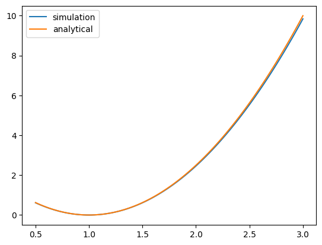

import jax.numpy as jnp
from jaxtyping import Array, Float
from tqdm.notebook import tqdm
import pandas as pd
from pyprojroot import here
from isssm.importance_sampling import ess_pct
import tensorflow_probability.substrates.jax.distributions as tfd
from tensorflow_probability.substrates.jax.distributions import (
MixtureSameFamily,
Normal,
Categorical,
)
import jax.random as jrn
import matplotlib.pyplot as plt
from jax import vmap
from functools import partial
key = jrn.PRNGKey(2342341234)Imports & Setup
We’ll define the targets \(\mathbf P\) for both examples:
- Normal: \(\mathcal N (0, 1)\),
- Gaussian location mixure (GMM): $ ( N(-1, ^{2}) + N(1, ^{2}))$ for \(\omega^{2} \in \{0.1, 0.5, 1.0\}\) and
- Gaussain scale mixture (GGM_scale): $ ( N(0, 1) + N(0, ^{-2}))$ for \(\varepsilon^{2} \in \{2, 10, 100\}\).
tau2 = 1.0
N_interpolate = 101
N_samples = int(1e4)
N_var = int(1e4)
N_boot = int(1e3)
s2s = jnp.linspace(0.5 * tau2, 3.0 * tau2, N_interpolate)
mus = jnp.linspace(0.0, 2.0, N_interpolate)
omega2s = jnp.array([0.1, 0.5, 1.0])
eps2s = 1 / jnp.array([0.01, 0.1, 0.5])def gmm_location(omega2: float):
P = MixtureSameFamily(
mixture_distribution=Categorical(probs=jnp.array([0.5, 0.5])),
components_distribution=Normal(jnp.array([-1.0, 1.0]), jnp.sqrt(omega2)),
)
return P
def gmm_scale(eps2: float):
P = MixtureSameFamily(
mixture_distribution=Categorical(probs=jnp.array([0.5, 0.5])),
components_distribution=Normal(
jnp.array([0.0, 0.0]), jnp.array([1.0, 1 / jnp.sqrt(eps2)])
),
)
return P
targets = {
"Normal": Normal(loc=0.0, scale=1.0),
**{f"GMM_location_{omega2:.2f}": gmm_location(omega2) for omega2 in omega2s},
**{f"GMM_scale_{eps2:.2f}": gmm_scale(eps2) for eps2 in eps2s},
}target_meta = pd.DataFrame(
[
pd.Series({"P": "Normal", "param_name": None, "param_value": None}),
*[
pd.Series(
{
"P": f"GMM_location_{omega2:.2f}",
"param_name": "$\\omega^2$",
"param_value": omega2,
}
)
for omega2 in omega2s
],
*[
pd.Series(
{
"P": f"GMM_scale_{eps2:.2f}",
"param_name": "$\\varepsilon^2$",
"param_value": eps2,
}
)
for eps2 in eps2s
],
]
)
target_meta.to_csv(here("data/figures/fixed_mu_s2_target_meta.csv"), index=False)Univariate Gaussian proposal, \(\sigma^2\) fixed
Asymptotic variances by simulation
To assess simulation error, we will estimate standard errors by bootstrap, for which we use our own implementation, based on resampling.
def bootstrap_se(samples: Float[Array, "N ..."], fun, key, N_boot: int):
"""Simple bootstrap standard error estimation."""
N, *_ = samples.shape
key, sk = jrn.split(key)
resamples = jrn.choice(sk, samples, shape=(N_boot, N), replace=True)
boot_estimates = vmap(fun)(resamples)
return jnp.std(boot_estimates, axis=0)To estimate \(\mu\) in 3.55, we implement both the CE method and EIS.
def ce_mu(samples: Float[Array, "N"], weights: Float[Array, "N"], s2: float):
mu = jnp.sum(samples * weights) / jnp.sum(weights)
psi = mu / jnp.sqrt(s2)
return psi
def eis_mu(samples, weights, logp, s2):
(N,) = weights.shape
X = jnp.array([jnp.ones(N), samples / jnp.sqrt(s2)]).reshape((2, N)).T
wX = jnp.einsum("i,ij->ij", jnp.sqrt(weights), X)
logh = Normal(0, jnp.sqrt(s2)).log_prob(samples)
y = jnp.sqrt(weights) * (logp - logh)
beta = jnp.linalg.solve(wX.T @ wX, wX.T @ y)
psi = beta[1]
return psiFor any given target \(\mathbf P\) and \(\sigma^2\), we estimate the asymptotic variance of both methods by simulation. We also estimate the variance ratio as well as standard errors for all estimates by the bootstrap.
Note that we convert from the parameter \(\mu\) to \(\psi = \frac{\mu}{\sigma}\), as it is the natural parameter we estimate with both methods (this doesn’t affect the variance ratio, but does affect the individual variances).
def compare_ce_eis_fixed_s2(
target_label: str, s2: float, N_samples: int, N_var: int, N_boot: int, key, P: None
):
if P is None:
P = targets[target_label]
tau2 = P.variance()
mu_ce = 0.0
mu_eis = 0.0
key, subkey = jrn.split(key)
samples = P.sample((N_var, N_samples), seed=subkey)
weights = jnp.ones_like(samples)
logp = P.log_prob(samples)
# CE-method
psis_ce = vmap(partial(ce_mu, s2=s2))(samples, weights)
var_ce = N_samples * jnp.var(psis_ce)
key, sk_boot = jrn.split(key)
se_ce = bootstrap_se(psis_ce, jnp.var, sk_boot, N_boot)
# EIS
psis_eis = vmap(partial(eis_mu, s2=s2))(samples, weights, logp)
var_eis = N_samples * jnp.var(psis_eis)
se_eis = bootstrap_se(psis_eis, jnp.var, sk_boot, N_boot)
# var_ratio
var_ratio = var_eis / var_ce
se_var_ratio = bootstrap_se(
jnp.stack([psis_ce, psis_eis], axis=1),
lambda x: jnp.var(x[:, 1]) / jnp.var(x[:, 0]),
sk_boot,
N_boot,
)
# efficiency factor
optimal_G = Normal(0, jnp.sqrt(s2))
key, subkey = jrn.split(key)
samples_ef = optimal_G.sample((N_samples), seed=subkey)
log_weights_ef = P.log_prob(samples_ef) - optimal_G.log_prob(samples_ef)
EF = ess_pct(log_weights_ef)
return pd.Series(
{
"P": target_label,
"tau2": tau2,
"s2": s2,
"mu_ce": mu_ce,
"var_ce": var_ce,
"se_ce": se_ce,
"ef_ce": EF,
"mu_eis": mu_eis,
"var_eis": var_eis,
"se_eis": se_eis,
"ef_eis": EF,
"var_ratio": var_ratio,
"se_var_ratio": se_var_ratio,
}
)key, sk = jrn.split(key)
result_fixed_s2 = []
for target_label in tqdm(targets.keys()):
for s2 in tqdm(s2s):
result_fixed_s2.append(
compare_ce_eis_fixed_s2(target_label, s2, N_samples, N_var, N_boot, sk)
)
result_fixed_s2 = pd.DataFrame(result_fixed_s2)result_fixed_s2.to_csv(here("data/figures/fixed_s2.csv"), index=False)Compare to analytical results
To verify the simulation results, we compare to the analytical expression of the variance ratio derived in the thesis.
def var_ratio_normal_analytical(s2, tau2):
a = 1 / 2 * (1 / s2 - 1 / tau2)
gamma = 10 * a**2 * tau2**3
var_eis_true = s2 / tau2**2 * gamma
var_ce_true = tau2 / s2
return var_eis_true / var_ce_truenormal_result = result_fixed_s2[result_fixed_s2["P"] == "Normal"]
true_ratios = var_ratio_normal_analytical(normal_result["s2"], normal_result["tau2"])
plt.plot(normal_result["s2"], normal_result["var_ratio"], label="simulation")
plt.plot(normal_result["s2"], true_ratios, label="analytical")
plt.legend()
plt.show()
Univariate Gaussian proposal, \(\mu\) fixed
Asymptotic variances by simulation
def ce_s2(samples, weights, mu):
s2 = jnp.sum((samples - mu) ** 2 * weights) / jnp.sum(weights)
psi = -1 / 2 / s2
return psi
def eis_s2(samples, weights, logp, mu):
(N,) = weights.shape
X = jnp.array([jnp.ones(N), (samples - mu) ** 2]).T
wX = jnp.einsum("i,ij->ij", jnp.sqrt(weights), X)
y = jnp.sqrt(weights) * logp
beta = jnp.linalg.solve(wX.T @ wX, wX.T @ y)
psi = beta[2]
return psidef compare_ce_eis_fixed_mu(
target_label: str, mu: float, N_samples: int, N_var: int, N_boot: int, key, P=None
):
if P is None:
P = targets[target_label]
tau2 = P.variance()
key, subkey = jrn.split(key)
samples = P.sample((N_var, N_samples), seed=subkey)
weights = jnp.ones_like(samples)
logp = P.log_prob(samples)
# CE-method
psis_ce = vmap(partial(ce_s2, mu=mu))(samples, weights)
s2_ce = jnp.mean(-1 / 2 / psis_ce)
var_ce = N_samples * jnp.var(psis_ce)
key, sk_boot = jrn.split(key)
se_ce = bootstrap_se(psis_ce, jnp.var, sk_boot, N_boot)
# EIS
psis_eis = vmap(partial(eis_s2, mu=mu))(samples, weights, logp)
s2_eis = jnp.mean(-1 / 2 / psis_eis)
var_eis = N_samples * jnp.var(psis_eis)
se_eis = bootstrap_se(psis_eis, jnp.var, sk_boot, N_boot)
# var_ratio
var_ratio = var_eis / var_ce
se_var_ratio = bootstrap_se(
jnp.stack([psis_ce, psis_eis], axis=1),
lambda x: jnp.var(x[:, 1]) / jnp.var(x[:, 0]),
sk_boot,
N_boot,
)
# efficiency factor
key, subkey = jrn.split(key)
optimal_G_ce = Normal(mu, jnp.sqrt(s2_ce))
samples_ef_ce = optimal_G_ce.sample((N_samples), seed=subkey)
log_weights_ef_ce = P.log_prob(samples_ef_ce) - optimal_G_ce.log_prob(samples_ef_ce)
EF_ce = ess_pct(log_weights_ef_ce)
optimal_G_eis = Normal(mu, jnp.sqrt(s2_eis))
samples_ef_eis = optimal_G_eis.sample((N_samples), seed=subkey)
log_weights_ef_eis = P.log_prob(samples_ef_eis) - optimal_G_eis.log_prob(
samples_ef_eis
)
EF_eis = ess_pct(log_weights_ef_eis)
return pd.Series(
{
"P": target_label,
"tau2": tau2,
"mu": mu,
"s2_ce": s2_ce,
"var_ce": var_ce,
"se_ce": se_ce,
"ef_ce": EF_ce,
"s2_eis": s2_eis,
"var_eis": var_eis,
"se_eis": se_eis,
"ef_eis": EF_eis,
"var_ratio": var_ratio,
"se_var_ratio": se_var_ratio,
}
)key, sk = jrn.split(key)
result_fixed_mu = []
for target_label in tqdm(targets.keys()):
for mu in tqdm(mus):
result_fixed_mu.append(
compare_ce_eis_fixed_mu(target_label, mu, N_samples, N_var, N_boot, sk)
)
result_fixed_mu = pd.DataFrame(result_fixed_mu)result_fixed_mu.to_csv(here("data/figures/fixed_mu.csv"), index=False)data/figures/gsmm_eps.csv
from IPython.display import Latex, display
from sympy import Rational, exp, factor, integrate, lambdify, log, oo, pi, sqrt, symbols
from sympy.printing.latex import latex
from sympy.stats import E, Normal as NormalSympy
from fastcore.test import test_close
import pandas as pd
from pyprojroot import here# symbols used
x, nu, mu, tau, sigma, eps = symbols("x nu mu tau sigma epsilon")
def show(lhs, expr):
display(Latex("$" + lhs + " = " + latex(expr) + "$"))
def gaussian_log_prob(x, mu, sigma):
return (
-1 / 2 * (x - mu) ** 2 / sigma**2 - 1 / 2 * log(2 * pi) - 1 / 2 * log(sigma**2)
)
# exponential integral of a second order polynomial
# int exp(ax^2 + bx + c) dx
# a has to be negative
def exp_int(poly, x):
a, b, c = poly.as_poly(x).all_coeffs()
return sqrt(pi / -a) * exp(b**2 / 4 / -a + c)
# second moment of importance sampling weights w.r.t. G
# for P Gaussian, G Gaussian
def rho_normal():
p = gaussian_log_prob(x, nu, tau)
g = gaussian_log_prob(x, mu, sigma)
return exp_int(2 * p - g, x)
jnp_rho_normal = lambdify((nu, tau, mu, sigma), rho_normal(), "jax")
# second moment of importance sampling weights w.r.t. G
# for P mixture of two Gaussians, G Gaussian
def rho_glmm():
p1 = gaussian_log_prob(x, nu, tau)
p2 = gaussian_log_prob(x, -nu, tau)
g = gaussian_log_prob(x, mu, sigma)
return (
1 / 4 * exp_int(2 * p1 - g, x)
+ 1 / 4 * exp_int(2 * p2 - g, x)
+ 1 / 2 * exp_int(p1 + p2 - g, x)
)
def rho_gsmm():
p1 = gaussian_log_prob(x, 0.0, 1.0)
p2 = gaussian_log_prob(x, 0.0, 1 / eps)
g = gaussian_log_prob(x, mu, sigma)
return (
1 / 4 * exp_int(2 * p1 - g, x)
+ 1 / 4 * exp_int(2 * p2 - g, x)
+ 1 / 2 * exp_int(p1 + p2 - g, x)
)
jnp_rho_glmm = lambdify((nu, tau, mu, sigma), rho_glmm(), "jax")
jnp_rho_gsmm = lambdify((eps, mu, sigma), rho_gsmm(), "jax")
test_close(jnp_rho_glmm(0, 1, 0, 1), 1.0)
test_close(jnp_rho_gsmm(1, 0, 1), 1.0)def bootstrap_se(samples, fun, key, N_boot=N_boot):
N, *_ = samples.shape
key, sk = jrn.split(key)
resamples = jrn.choice(sk, samples, shape=(N_boot, N), replace=True)
boot_estimates = vmap(fun)(resamples)
return jnp.std(boot_estimates, axis=0)
def s2_ce_eis(N, key, mu, P):
key, sk = jrn.split(key)
samples = P.sample(N, sk)
weights = jnp.ones(N)
return jnp.array(
[ce_s2(samples, weights, mu), eis_s2(samples, weights, P.log_prob(samples), mu)]
)
def gmm_scale_s2(mu, eps2, N, key, M):
key, *keys = jrn.split(key, M + 1)
keys = jnp.array(keys)
P = MixtureSameFamily(
mixture_distribution=Categorical(probs=jnp.array([0.5, 0.5])),
components_distribution=Normal(
jnp.array([0.0, 0.0]), jnp.array([1.0, 1 / jnp.sqrt(eps2)])
),
)
mixture_estimators = partial(s2_ce_eis, P=P)
return vmap(mixture_estimators, (None, 0, None))(N, keys, mu)
def are(samples):
var_ce, var_eis = (samples).var(axis=0)
return var_eis / var_ce
def gmm_scale_are_s2(mu, eps2, N, key, M):
samples = gmm_scale_s2(mu, eps2, N, key, M)
var_ce, var_eis = samples.var(axis=0)
est_se = bootstrap_se(samples, are, key)
return var_eis / var_ce, est_seThe Kernel crashed while executing code in the current cell or a previous cell. Please review the code in the cell(s) to identify a possible cause of the failure. Click <a href='https://aka.ms/vscodeJupyterKernelCrash'>here</a> for more info. View Jupyter <a href='command:jupyter.viewOutput'>log</a> for further details.
from functools import partial
vareps = jnp.logspace(-2, 0, 51)
key, subkey = jrn.split(key)
are_eps, are_eps_se = vmap(
partial(gmm_scale_are_s2, mu=0.0, N=N_samples, key=subkey, M=N_var)
)(eps2=vareps**2)s2_est = (
-1
/ 2
/ vmap(partial(gmm_scale_s2, mu=0.0, N=N_samples, key=subkey, M=N_var))(
eps2=vareps**2
)
)s2_cem, s2_eis = jnp.nanmean(s2_est, axis=1).T
s2_cem = 1 / 2 * (1 + 1 / vareps**2)
rho_eps_cem = vmap(jnp_rho_gsmm, (0, None, 0))(vareps, 0.0, jnp.sqrt(s2_cem))
rho_eps_eis = vmap(jnp_rho_gsmm, (0, None, 0))(vareps, 0.0, jnp.sqrt(s2_eis))pd.DataFrame(
{
"epsilon": vareps,
"sigma2_cem": s2_cem,
"sigma2_eis": s2_eis,
"rho_cem": rho_eps_cem,
"rho_eis": rho_eps_eis,
"are": are_eps,
}
).to_csv(here("data/figures/gsmm_eps.csv"), index=False)